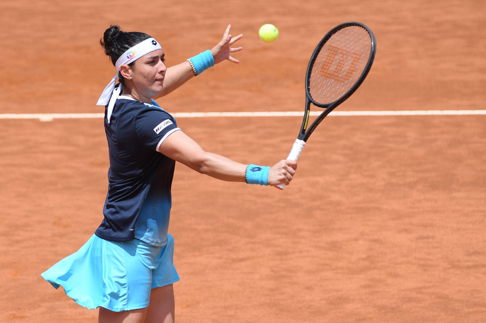
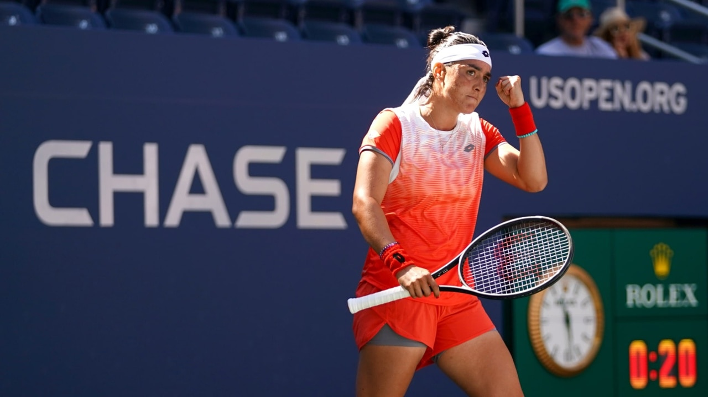
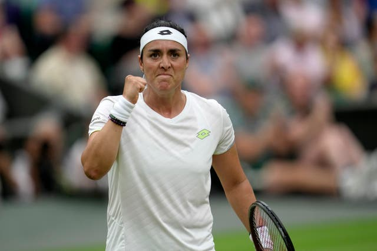
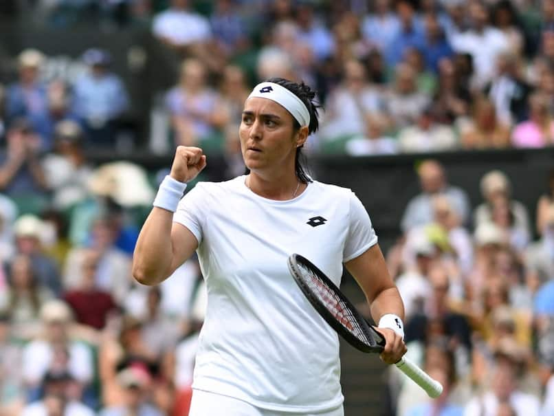

أنس جابر - قصة نجاح
أنس جابر، وُلدت في 28 أغسطس 1994 في قصر هلال، تونس. هي لاعبة تنس محترفة تعتبر من أبرز الرياضيات في العالم العربي وأفريقيا.
بدأت أنس لعب التنس في سن الثالثة، وتلقت تدريبها الأولي في مركز التنس في تونس، ثم انتقلت إلى فرنسا لمتابعة التدريب الاحترافي.
من أبرز إنجازاتها:
- وصيفة بطولة ويمبلدون 2022 و2023.
- أول عربية تصل إلى نهائي إحدى بطولات الجراند سلام.
- دخلت ضمن العشرة الأوائل في تصنيف WTA العالمي.




تُعرف أنس بأسلوبها الإبداعي في اللعب، وشجاعتها في الملعب، وهي مصدر إلهام لكثير من الفتيات في تونس والعالم العربي.